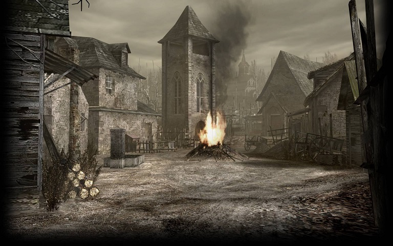
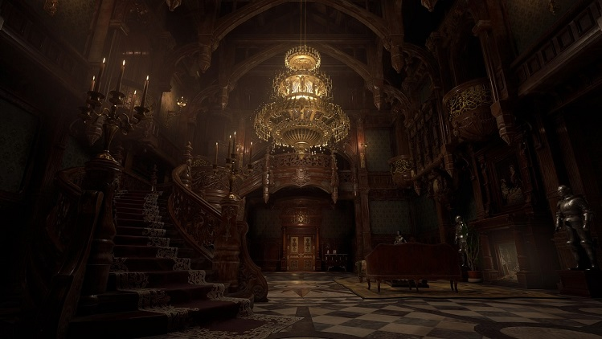

Raccoon City az Umbrella Corporations székhelye ahol kísérleteket végeztek egy bizonyos T-vírussal ami később okozta a járványt. Az alaphelyzet, hogy ez a járvány elterjed egész Raccoon City-ben, az embereket zombivá alakítva. Az első játékban egy rezidenciát fedezhetünk fel (ami a város közelében helyezkedik el) Jillel vagy Chrissel akik kommandós küldetésük teljesítése érdekében léptek be ebbe a veszélyes körzetbe. Küldetésük hogy megkeressék a Béta kommandóscsapat tagjait akik a vírus felderítése miatt mentek oda. Albert Wesker, a kommandósok kapitánya azonban kettős ügynök, és titokban az Umbrellának is dolgozik. Azonban Weskert megölik, Chris és Jill megmenekül. A játékból kiderül a kísérletek helyszíne is, a földalatti Umbrella Corps. Kutatólabor, ami egész Raccoon Cityt behálózza.
A Resident Evil 2 két hónappal az első rész rezidenciáján történő események után játszódik, és ezúttal Raccoon City-ben járunk, amely zombik által lerohant pokollá vált. A két új hősünk: Leon Kennedy és Claire Redfield a városba érkeznek, és sokként éri őket, hogy emberek helyett márcsak a hörgő, rothadozó, agresszív élőhalottakkal találkoznak, akik szét akarják marcangolni őket, miután egy rendőrautóval balesetet szenvednek. Mindketten a rendőrörsre igyekeznek, ahol a túlélés mellett rá kell jönniük, mi a fene is történt a városban, továbbá ki kell deríteniük egy összeesküvés okait is. A sztori csak alapjaiban követi az eredetit, már csak annak okán is, mert rengeteg új átvezető jelenettel gazdagodott a játék és másmilyen az a mód is más, ahogy a két történetszál (Leoné és Claire-é) egymás mellett, párhuzamosan fut. Ahelyett, hogy ide-oda ugranánk a karakterek között, itt még egyszer végig játszhatjuk a játékot Claire-rel, ha már Leonnal kivégeztük. Mindkét oldal története másmilyen, mint az eredeti játékban, más útvonalakkal, befejezésekkel és átvezetőkkel. Másféle fegyvereket is kapunk és másfajta kihívásoknak kell megfelelnünk.
Jill Valentine az egyik utolsó megmaradt ember Raccoon Cityben, aki szemtanúja volt az Umbrella által elkövetett bűntetteknek. Hogy megállítsa, Umbrella szabadjára engedi végső titkos fegyverét; Nemezis!
Hősünk Leon Kennedy, akinek a feladata az elnök lányának (Ashley Graham-nek) megmentése egy misztérikus szekta elől. A helyszine egy spanyol falu. A falu népe ( Iluminados) akik folyamatos befolyás alatt állnak, és el akarják rabolni Ashley-t. Végül sikerül nekik megmenekülni
A fertőzött falu |
|
|---|---|
|  | |
A történetben Chris Redfield és Sheva Alomar aaz afrikai KIjuju régióba utaznak, hogy megállítsák a biofegyverek terjedését és legyőzzék a gonosz Albert Weskert, aki az Uroboros vírus segítségével globális járványt akar kirobbantani. A végső harcban sikerül legyőzniük Weskert és megakadályozni a katasztrófát.
A története 4 összefonódó kampányra épül, ahol Leon S. Kennedy, Chris Redfield, Jake Muller és Ada Wong különböző helyeken harcolnak biofegyverek ellen. Az események során egy új vírus, a C-vírus, globális járványt okoz, hőseinknek kell megküzdeniük a zombikkal és mutánsokkal, miközben felfedik a vírus mögötti összeesküvést és megpróbálják megakadályozni a világméretű katasztrófát.
Ethan Wintersről szól, aki eltűnt felesége, Mia keresésére indul egy elhagyatott louisianai birtokra. Ott találkozik a pszichotikus Baker családdal, akik a veszélyes E-vírussal fertőzöttek. Ethan felfedezi, hogy Mia is a vírus hatása alatt áll, és megpróbálja megmenteni őt, miközben túlél a család és különféle groteszk szörnyek ellen. A történet során fény derül a vírus eredetére és az Umbrella Corps. sötét titkaira.
Rejtélyes támadás során Ethan Winters lányát Rose-t elrabolják. Ethan egy távoli európai faluba kerül, ahol különféle mutánsok, és és természet feletti lények élnek. Szembe kell néznie négy fő ellenséggel- Lady Dimitrescu, Karl Heisenberg, Salvatore Moreau és Donna Beneviento-, hogy megmentse lányát, és kiderítse mi áll a falu borzalmai mögött.
Lady Dimitrescu kastélya |
|
|---|---|
|  | |
{kind=link}
{kind=link}